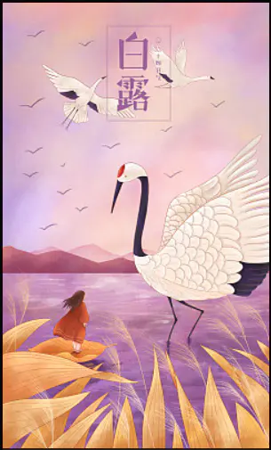

作词：林怡凤
作曲：林俊杰
林：你眼眶超载的眼泪
乘客是绝望和心碎
我可以看见你忍住伤悲
那一双爱笑眼睛不适合皱眉
邓：你目光独有的温暖
是不会熄灭的明天
我可以感觉
你没有说出口的安慰
远比我失去的更加珍贵
林：手心的蔷薇
邓：刺伤而不自觉
林：你值得被疼爱
邓：你懂我的期待
林：绚烂后枯萎
邓：经过几个圆缺
合：有我 你 在
邓：你埋藏的蔷薇
林：你动人的香味
邓：是最好的你
合：陪我盼我接受世界
不完美另一面多美
林：指纹写下所有遇见
你留着
合：心碎那一页
林：骄傲的展现你真无所谓
邓：无所谓
林：偶尔放纵的泪
像汹涌的海水
邓：我学着一个人存在
林：I'm here
邓：关上灯
合：比较不孤单
邓：你给的力量
让我在夜里安心入睡
就算没有人心疼我的泪
林：手心的蔷薇
邓：刺伤而不自觉
林：你值得被疼爱
邓：你懂我的期待
林：绚烂后枯萎
邓：经过几个圆缺
合：有我 你 在 哦
邓：你埋藏的蔷薇
林：你动人的香味
邓：是最好的你
合：陪我盼我接受世界
不完美另一面多美
林：手心的蔷薇
邓：哦
林：是带刺的纪念
邓：哦
林：耶
整理好眼泪
合：I am here
陪我 你 盼我 你
接受世界
太虚伪太善变不完美
天会黑心会累
耶耶
有我 你 在什么都无畏
林：别害怕
邓：握太紧
林：放手
邓：蔷薇
合：伤痕累累
这世界有你
无畏
